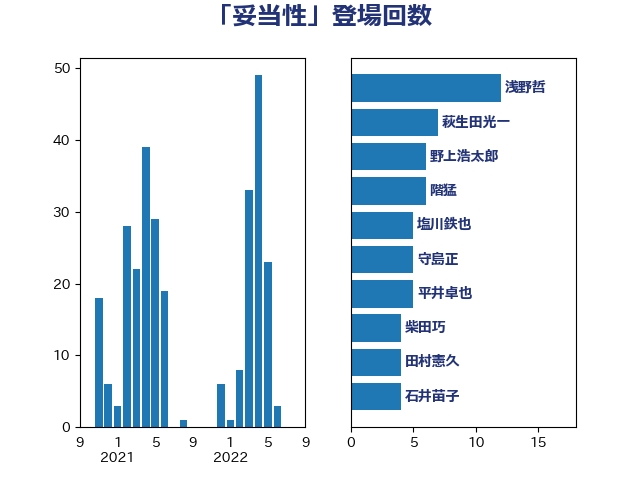

単語「妥当性」

| 浅野哲 | 国民民主党 | 12 回 |
| 萩生田光一 | 自由民主党 | 7 回 |
| 野上浩太郎 | 自由民主党 | 6 回 |
| 階猛 | 立憲民主党 | 6 回 |
| 塩川鉄也 | 日本共産党 | 5 回 |
| 守島正 | 日本維新の会 | 5 回 |
| 平井卓也 | 自由民主党 | 5 回 |
| 柴田巧 | 日本維新の会 | 4 回 |
| 田村憲久 | 自由民主党 | 4 回 |
| 石井苗子 | 日本維新の会 | 4 回 |
| 篠原豪 | 立憲民主党 | 4 回 |
| 中島克仁 | 立憲民主党 | 3 回 |
| 川田龍平 | 立憲民主党 | 3 回 |
| 後藤茂之 | 自由民主党 | 3 回 |
| 石原正敬 | 自由民主党 | 3 回 |
| 石垣のりこ | 立憲民主党 | 3 回 |
| 伊東良孝 | 自由民主党 | 2 回 |
| 伊波洋一 | 無所属 | 2 回 |
| 伊藤渉 | 公明党 | 2 回 |
| 勝部賢志 | 立憲民主党 | 2 回 |
| 古川禎久 | 自由民主党 | 2 回 |
| 塩田博昭 | 公明党 | 2 回 |
| 室井邦彦 | 日本維新の会 | 2 回 |
| 小山展弘 | 立憲民主党 | 2 回 |
| 山田賢司 | 自由民主党 | 2 回 |
| 斉藤鉄夫 | 公明党 | 2 回 |
| 杉尾秀哉 | 立憲民主党 | 2 回 |
| 梶山弘志 | 自由民主党 | 2 回 |
| 田村まみ | 国民民主党 | 2 回 |
| 石橋通宏 | 立憲民主党 | 2 回 |
| 美延映夫 | 日本維新の会 | 2 回 |
| 西岡秀子 | 国民民主党 | 2 回 |
| 逢坂誠二 | 立憲民主党 | 2 回 |
| 金子恭之 | 自由民主党 | 2 回 |
| 鈴木俊一 | 自由民主党 | 2 回 |
| 音喜多駿 | 日本維新の会 | 2 回 |
| 下条みつ | 立憲民主党 | 1 回 |
| 井上信治 | 自由民主党 | 1 回 |
| 伊藤孝江 | 公明党 | 1 回 |
| 吉川沙織 | 立憲民主党 | 1 回 |
| 吉良よし子 | 日本共産党 | 1 回 |
| 坂本哲志 | 自由民主党 | 1 回 |
| 大串正樹 | 自由民主党 | 1 回 |
| 宗清皇一 | 自由民主党 | 1 回 |
| 寺田静 | 無所属 | 1 回 |
| 小宮山泰子 | 立憲民主党 | 1 回 |
| 山岸一生 | 立憲民主党 | 1 回 |
| 山崎誠 | 立憲民主党 | 1 回 |
| 山本香苗 | 公明党 | 1 回 |
| 山添拓 | 日本共産党 | 1 回 |
| 岩渕友 | 日本共産党 | 1 回 |
| 岸真紀子 | 立憲民主党 | 1 回 |
| 川合孝典 | 国民民主党 | 1 回 |
| 後藤祐一 | 立憲民主党 | 1 回 |
| 打越さく良 | 立憲民主党 | 1 回 |
| 東徹 | 日本維新の会 | 1 回 |
| 松村祥史 | 自由民主党 | 1 回 |
| 柳ヶ瀬裕文 | 日本維新の会 | 1 回 |
| 森屋宏 | 自由民主党 | 1 回 |
| 沢田良 | 日本維新の会 | 1 回 |
| 津島淳 | 自由民主党 | 1 回 |
| 清水貴之 | 日本維新の会 | 1 回 |
| 源馬謙太郎 | 立憲民主党 | 1 回 |
| 牧山ひろえ | 立憲民主党 | 1 回 |
| 田中健 | 国民民主党 | 1 回 |
| 田村智子 | 日本共産党 | 1 回 |
| 石井正弘 | 自由民主党 | 1 回 |
| 石田昌宏 | 自由民主党 | 1 回 |
| 秋野公造 | 公明党 | 1 回 |
| 竹内譲 | 公明党 | 1 回 |
| 緑川貴士 | 立憲民主党 | 1 回 |
| 自見はなこ | 自由民主党 | 1 回 |
| 舩後靖彦 | れいわ新選組 | 1 回 |
| 菅家一郎 | 自由民主党 | 1 回 |
| 藤井比早之 | 自由民主党 | 1 回 |
| 西村康稔 | 自由民主党 | 1 回 |
| 角田秀穂 | 公明党 | 1 回 |
| 赤羽一嘉 | 公明党 | 1 回 |
| 鈴木庸介 | 立憲民主党 | 1 回 |
| 阿部知子 | 立憲民主党 | 1 回 |
| 高橋千鶴子 | 日本共産党 | 1 回 |
| 高野光二郎 | 自由民主党 | 1 回 |
| 鰐淵洋子 | 公明党 | 1 回 |
| 鳩山二郎 | 自由民主党 | 1 回 |
| 麻生太郎 | 自由民主党 | 1 回 |